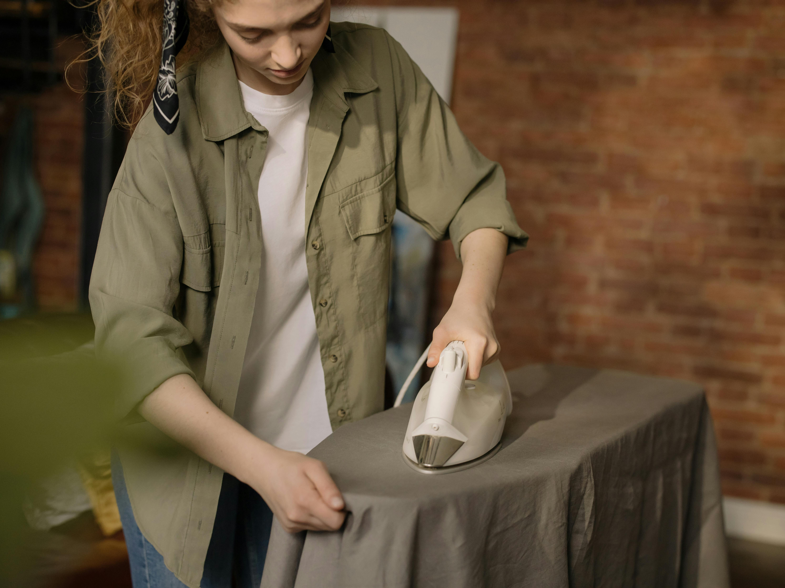
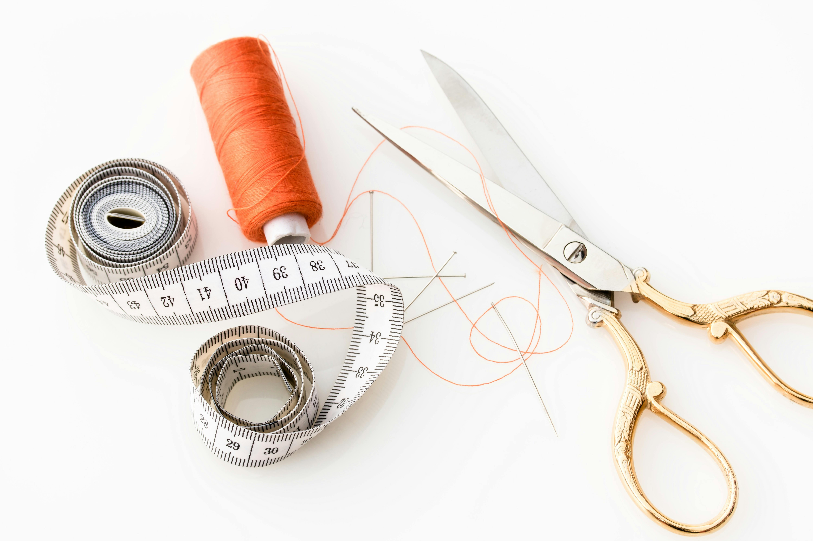

Every beginner sewer faces challenges, but don’t worry- these tips and tricks will make your projects
easier and more enjoyable!
Press your Seams- Before you start sewing, make sure to iron your fabric. This will help create
cleaner seams and make the sewing process smoother
Don’t Rush- Its easy to want to jump in on a project and rush through it. Taking your time will
help you make fewer mistakes (mistakes will happen no matter what, Its normal!). Slowing
down and focusing on each step of the pattern will help you.
Start with simple projects- Don’t dive into complicated projects too soon. It takes time to build
up the skills to create something complicated. The simple projects (like the ones linked on this
site) will teach important skills without being too overwhelming
Avoid Tension Troubles- A sewing machine has a feature where the tension of the stitches and
thread can be adjusted. Mess around with the tension at first to see how it works for each
project. If your stitches are too loose or too tight, It can disrupt the stability of the project.
Keep your machine clean- Machines get dusty! Make sure that the inside of the machine and the
compartment that holds the bottom thread are clean. These building up over time can cause
problems for the machine if not dealt with properly.

Starter Guide: Getting your first project started
Ready to start your first project? Follow this guide to set yourself up for success
Gather Your Materials: Choose a beginner project (like a pillow cover or tote bag) and gather all
the materials you'll need.
Prepare Your Fabric: Wash and iron your fabric to ensure it's clean and wrinkle-free before you
start sewing
Read Through the Instructions: Before starting, read through the step-by-step guide to make
sure you understand each step.
Set Up Your Sewing Machine: If you’re using a sewing machine, set it up with the correct needle
and thread. If you’re hand-sewing, gather your needles and thread.
Sew with Confidence: Take your time, enjoy the process, and remember that mistakes are part
of the learning journey!

Parts of a Sewing Machine
Thread Guide- The thread guide is used to direct and control the thread as it goes from the spool to the needle.
Needle- The needle is the part that pierces the fabric, carrying the thread to create stitches. There are different size needles for different projects.
Presser Foot- The presser foot holds the fabric in place, ensuring tension, even stitching, and keeps the fabric from shifting.
Bobbin Winder- The bobbin winder is used to wind thread onto the bobbin evenly before sewing.
Handwheel- The handwheel is used to manually move the needle up and down when needed, allowing for precise stitching.
Reverse Lever- The reverse lever is used to sew in reverse, which is used for reinforcing stitches and preventing the seam from unraveling.